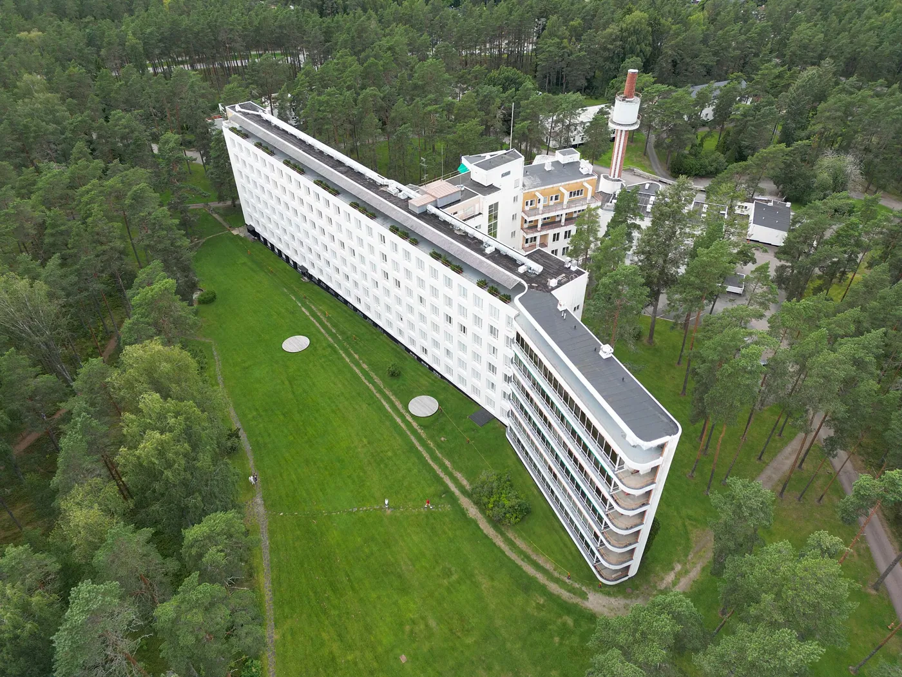
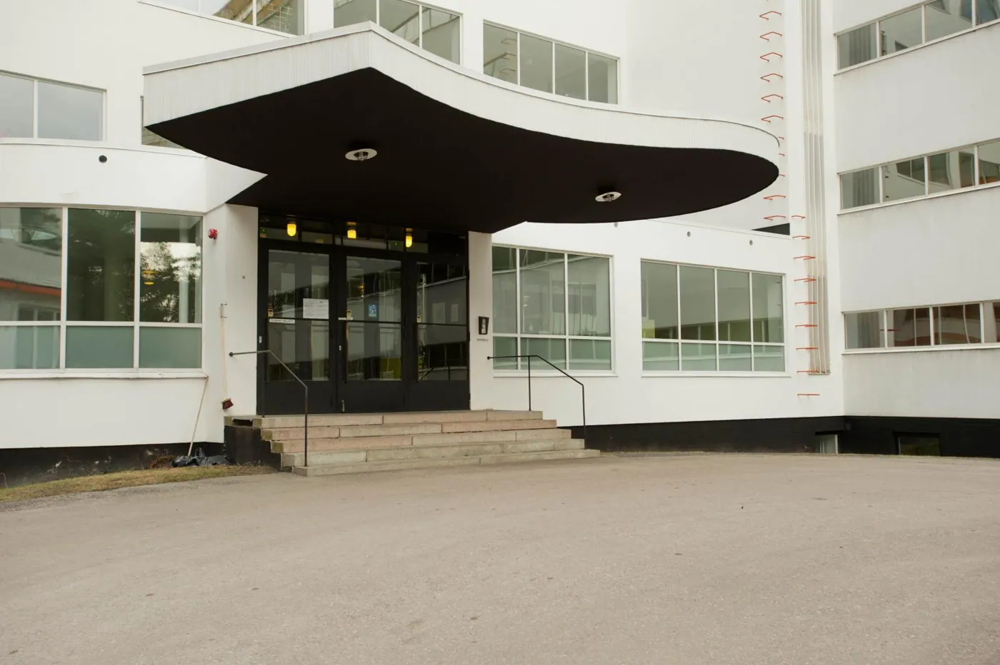
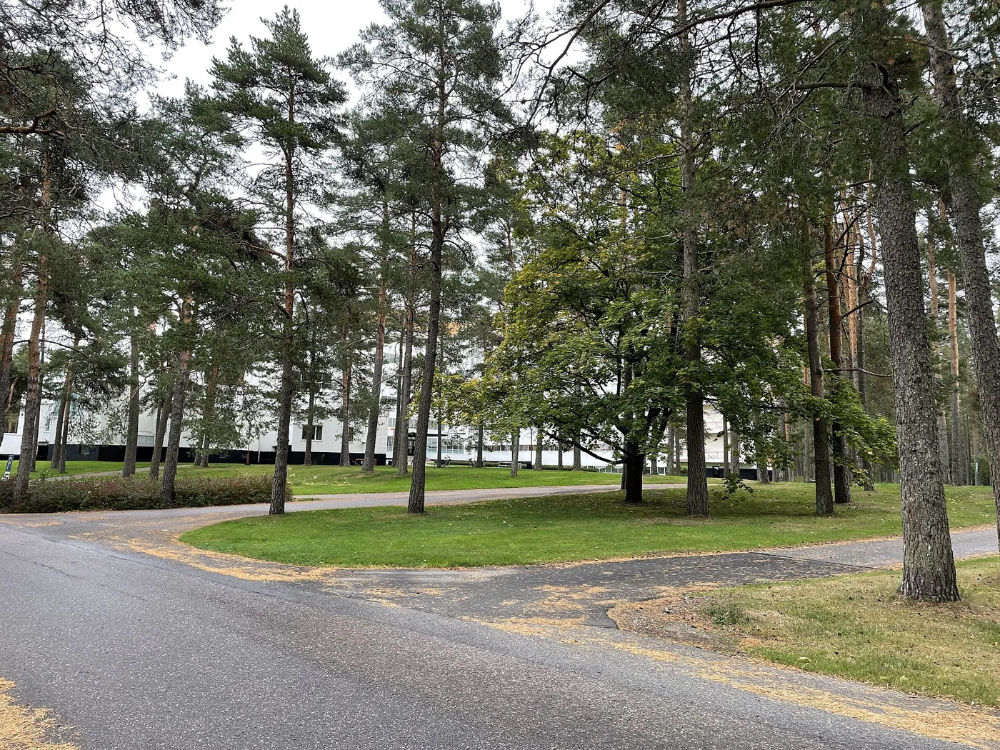
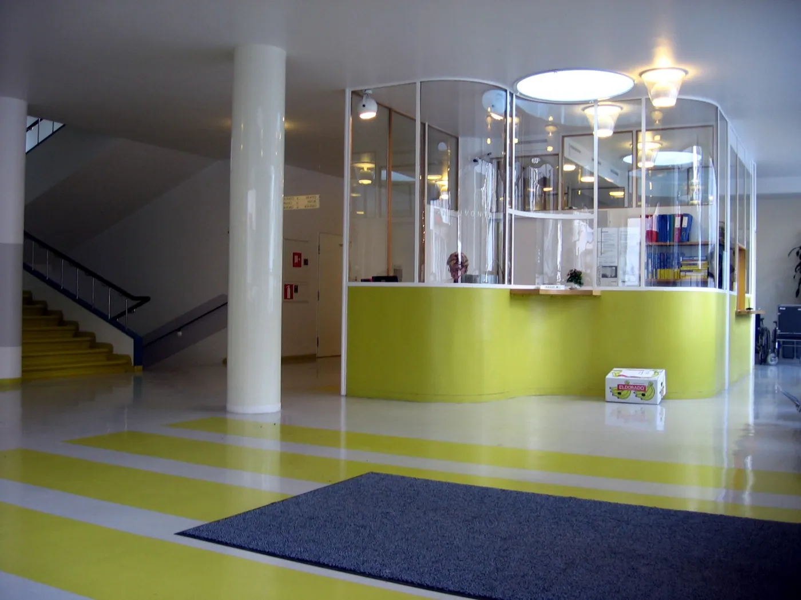

1/8 · Exterior · This is a photo of a monument in Finland identified by the ID 'Paimio Sanatorium' (Q368706) - RKY: 1795Photo: Marit Henriksson · CC BY-SA 4.0 · source

2/8 · Context · Unesco 2026 Paimion parantola Alvar AaltoPhoto: Aurorakiitäjä · CC BY-SA 4.0 · source

3/8 · Exterior · Entrance of Paimio Sanatorium, FinlandPhoto: Leon Liao from Barcelona, España · CC BY 2.0 · source

4/8 · Exterior · The terrace of the Paimio SanatoriumPhoto: Saandraaa · CC0 · source5/8 · Interior · This is a photo of a monument in Finland identified by the ID 'Paimio Sanatorium' (Q368706) - RKY: 1795Photo: Mikkoau · CC BY-SA 4.0 · source

6/8 · Interior · This is a photo of a monument in Finland identified by the ID 'Paimio Sanatorium' (Q368706) - RKY: 1795Photo: Pentti.halonen · CC BY-SA 4.0 · source7/8 · InteriorPublic domain · source8/8 · Detail · Alvar Aalto, Paimio Sanatorium, Patient bedroom lampPhoto: TTKK · CC BY-SA 3.0 · source